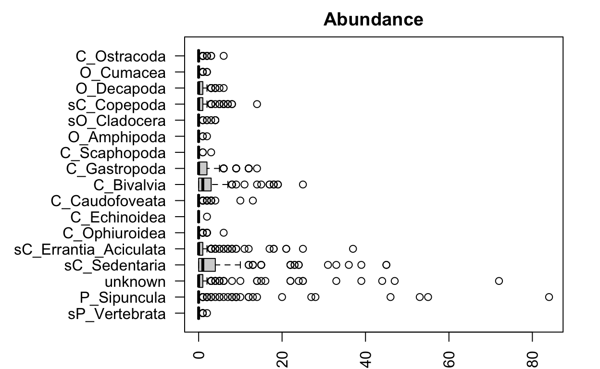
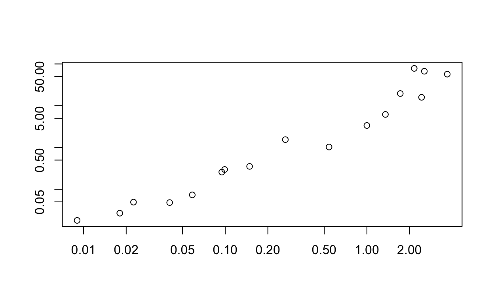
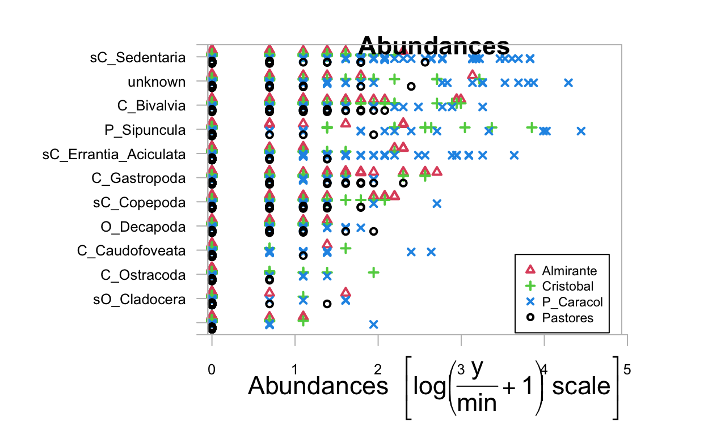
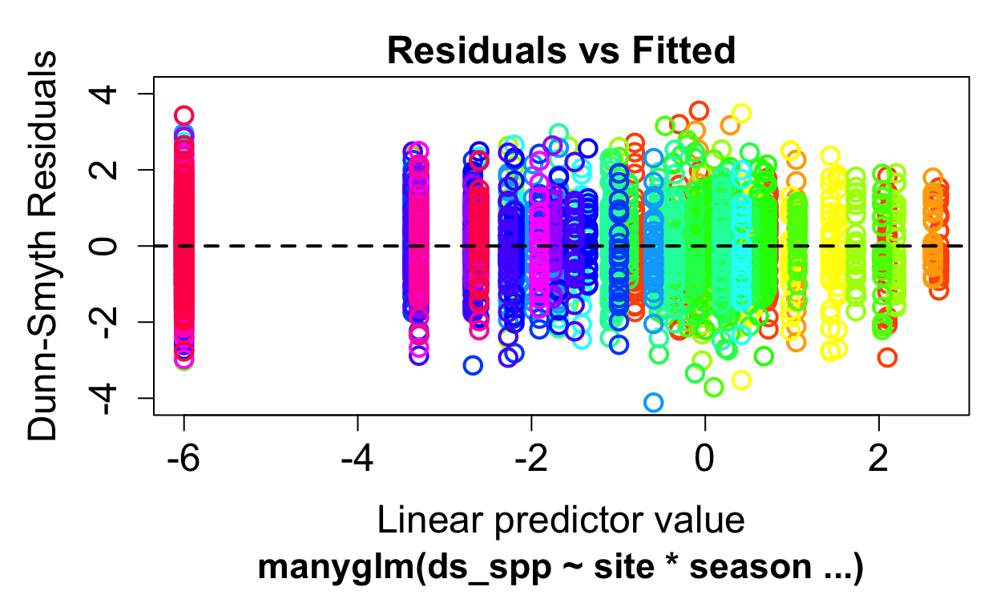
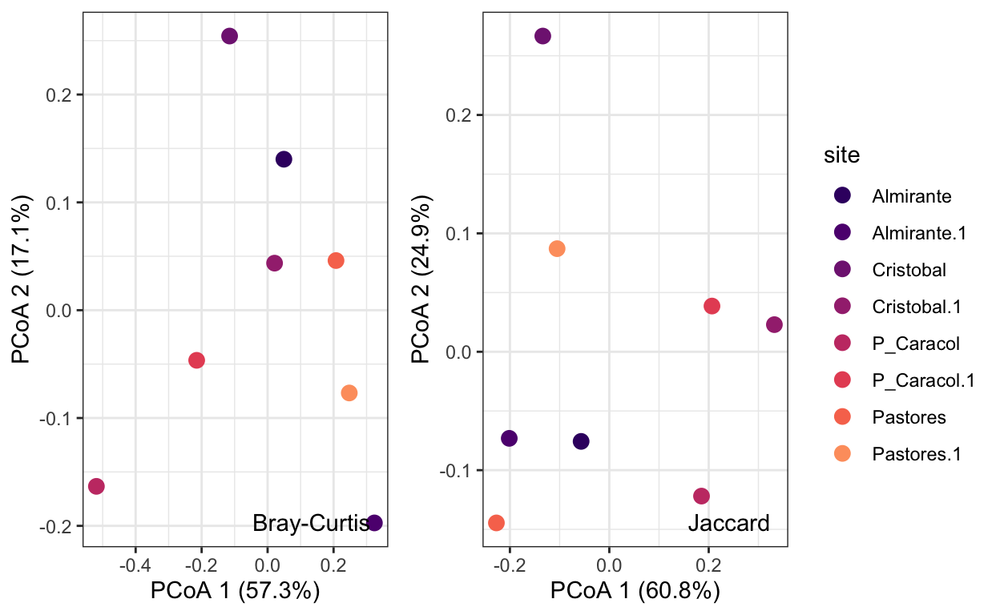
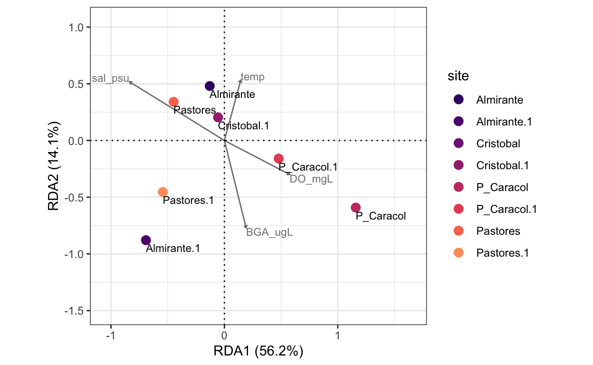
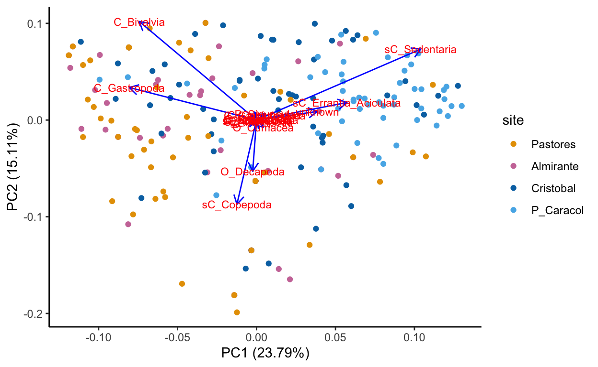
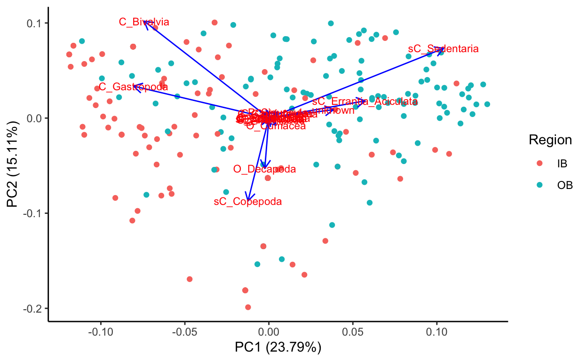
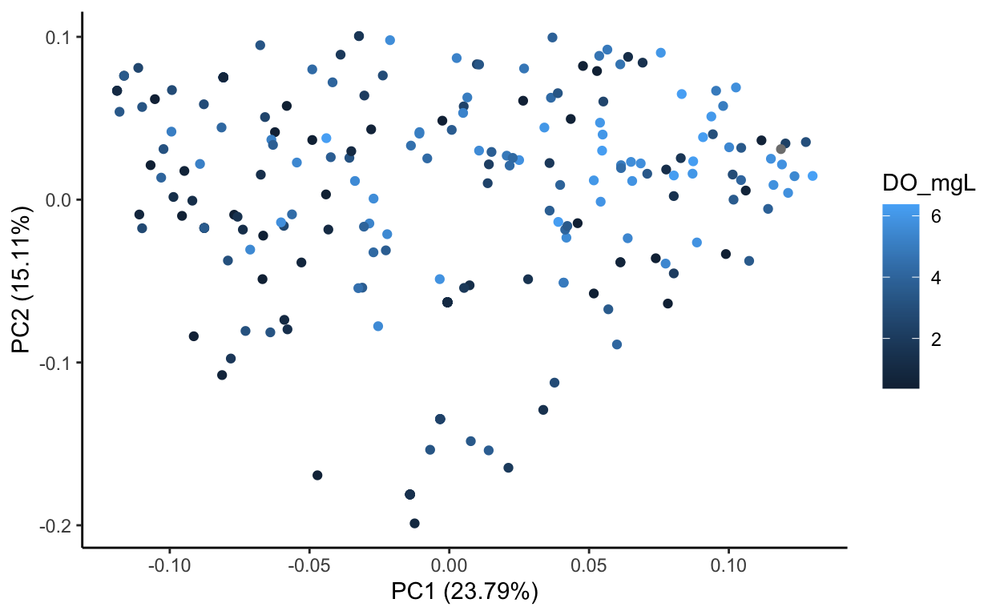

Reproducible workflow for assessing community composition of the macrofauna in Almirante Bay.
Hit the Hide Code button to hide the R code.
In this section, we explore the differences in the macrofaunal assemblages between the four sites across Almirante Bay weekly throughout a one-year time frame.
First we determine if there differences in the species composition of the marine taxa sampled? Do some taxa prefer particular sites while others are more generalized?
Then we look at seasonal influences. Does the hypoxic season impact their abundance? Which species are most impacted by seasonal changes? Which species are not?
Finally we look at the assemblage composition differences based on environmental parameters. This is because seasonality may not be the best measure of actual environmental changes. With the physical parameters page (add link) we see extreme fluctuations, sometimes on a weekly basis, highlighting the stoicasticisty of the conditions. This is particularly true for dissolved oxygen.
These questions are broken down in two parts. First, we statistically answer these questions (Part 1) then we visualize the relationships with different distance-based similarity matrices and ordination methods (Part 2).
Look at untransformed abundance data again:

It looks like some species are much more abundant and variable than others. It’s probably a good idea to check our mean-variance relationship!
First we convert the species data to an mvabund object format used by the mvabund function. The function `mvabund`calculates the abundance in each sample based on counts of all of the lowest taxonomic groups identified. It is a part of mvabund package. Data is transformed (square-root) (`sqrt`) to better visualize the differences and is a very common transformation for abundance data (same as Hellinger in vegan package) .
ds_spp <- mvabund(ds[,16:32]) Then we look at the mean-variance relationship using the meanvar.plot function:
meanvar.plot <-meanvar.plot(ds_spp)
You can clearly see that the species with high means (on the x axis) also have high variances (y axis). Then we fit predictive models using a negative binomial model for counts.
The mvabund approach improves power across a range of species with different variances and includes an assumption of a mean-variance relationship use the abundance data. This is family of GLMs with an appropriate mean-variance assumption. The default family used by mvabund when fitting multivariate GLMs is negative binomial which assumes a quadratic mean-variance relationship and a log-linear relationship between the response variables and any continuous variables.
To look at the transformed abundance data we use the mvabund plot function.
transformed_abund <- plot(ds_spp ~ ds$site, cex.axis=0.8, cex=0.8)
PIPING TO 2nd MVFACTOR 
This shows the most abundant species by site. Non-mobile polychaete worms (Sedentaria) appear to be the most abundant of the different taxa, and P. Caracol appears to have the highest abundances of many taxa.
model <- manyglm(ds_spp ~ site * season, family="negative_binomial")
M_output <- anova(model)
saveRDS(M_output, file = "M_output.rds")Analysis of Deviance Table
Model: ds_spp ~ site * season
Multivariate test:
Res.Df Df.diff Dev Pr(>Dev)
(Intercept) 221
site 218 3 349.7 0.001 ***
season 217 1 100.5 0.001 ***
site:season 214 3 80.3 0.010 **
---
Signif. codes: 0 '***' 0.001 '**' 0.01 '*' 0.05 '.' 0.1 ' ' 1
Arguments:
Test statistics calculated assuming uncorrelated response (for faster computation)
P-value calculated using 999 iterations via PIT-trap resampling.Check our model assumptions.

The residuals look good with the negative binomial distribution (i.e no patterns detectable). Note: no samples with were removed from this dataset. We can remove the species with lowest abundances (i.e. Echinoidea, Scaphopoda, Amphipoda, Cladocera, Cumacea which all had low counts within the full bay-wide dataset). This would help the distribution more.. For now we keep everything.
There were different species assemblages in the different sites (LRT = 710, P< 0.001) and during different seasons (LRT = 89.6, P < 0.001). There was also an interaction between region and season (LRT = 55, P < 0.003).
Then we perform pairwise comparisons to determine which sites are different from each other. For the paper, increase the nBoot to 999…
model_pairs <- anova(model, pairwise.comp = site, nBoot = 199)
model_pairsAnalysis of Deviance Table
Model: ds_spp ~ site * season
Multivariate test:
Res.Df Df.diff Dev Pr(>Dev)
(Intercept) 221
site 218 3 349.7 0.005 **
season 217 1 100.5 0.005 **
site:season 214 3 80.3 0.020 *
---
Signif. codes: 0 '***' 0.001 '**' 0.01 '*' 0.05 '.' 0.1 ' ' 1
Pairwise comparison results:
Observed statistic
Pastores vs P_Caracol 213.65
Almirante vs P_Caracol 175.96
Cristobal vs P_Caracol 124.68
Pastores vs Cristobal 70.16
Almirante vs Cristobal 58.03
Pastores vs Almirante 23.52
Free Stepdown Adjusted P-Value
Pastores vs P_Caracol 0.005 **
Almirante vs P_Caracol 0.005 **
Cristobal vs P_Caracol 0.005 **
Pastores vs Cristobal 0.005 **
Almirante vs Cristobal 0.010 **
Pastores vs Almirante 0.160
---
Signif. codes: 0 '***' 0.001 '**' 0.01 '*' 0.05 '.' 0.1 ' ' 1
Arguments:
Test statistics calculated assuming uncorrelated response (for faster computation)
P-value calculated using 199 iterations via PIT-trap resampling.We see from these results that there is a significant effect of site, meaning that the species composition of macrofauna clearly differs between the sites that they are found in. Every site is different from the others, except Almirante and Pastores.
To determine which species are important, in this we run univariate tests for each species separately. We also want to know if there is an interaction between site and seasonality in species abundances. This is done by using the p.uni=“adjusted” argument in the anova function. The “adjusted” part of the argument refers to the resampling method used to compute the p values, taking into account the correlation between the response variables. This correlation is often found in ecological systems where different species will interact with each other, competing with or facilitating each others’ resource use.
Testing hypotheses about the site effects and site-by-season interactions, again using a Wald statistic and 199 resamples (better to ramp up to 999 for the paper).
M1_uni <- anova(model, p.uni="adjusted")
M1_uniAnalysis of Deviance Table
Model: ds_spp ~ site * season
Multivariate test:
Res.Df Df.diff Dev Pr(>Dev)
(Intercept) 221
site 218 3 349.7 0.001 ***
season 217 1 100.5 0.001 ***
site:season 214 3 80.3 0.012 *
---
Signif. codes: 0 '***' 0.001 '**' 0.01 '*' 0.05 '.' 0.1 ' ' 1
Univariate Tests:
sP_Vertebrata P_Sipuncula unknown
Dev Pr(>Dev) Dev Pr(>Dev) Dev
(Intercept)
site 12.151 0.082 15.891 0.015 38.562
season 2.285 0.761 6.595 0.175 45.525
site:season 0.293 0.971 8.629 0.429 11.136
sC_Sedentaria sC_Errantia_Aciculata
Pr(>Dev) Dev Pr(>Dev) Dev
(Intercept)
site 0.001 119.416 0.001 71.442
season 0.001 0.732 0.894 0.087
site:season 0.231 6.677 0.565 20.649
C_Ophiuroidea C_Echinoidea
Pr(>Dev) Dev Pr(>Dev) Dev Pr(>Dev)
(Intercept)
site 0.001 7.663 0.358 2.776 0.920
season 0.994 1.677 0.826 1.489 0.829
site:season 0.006 0.238 0.971 0.002 0.971
C_Caudofoveata C_Bivalvia C_Gastropoda
Dev Pr(>Dev) Dev Pr(>Dev) Dev
(Intercept)
site 19.347 0.007 7.101 0.386 5.621
season 11.107 0.015 12.518 0.006 1.405
site:season 1.329 0.971 3.374 0.812 1.565
C_Scaphopoda O_Amphipoda
Pr(>Dev) Dev Pr(>Dev) Dev Pr(>Dev)
(Intercept)
site 0.514 5.02 0.625 1.965 0.965
season 0.838 4.494 0.384 4.454 0.384
site:season 0.971 0.001 0.971 0.001 0.971
sO_Cladocera sC_Copepoda O_Decapoda
Dev Pr(>Dev) Dev Pr(>Dev) Dev
(Intercept)
site 1.782 0.965 0.288 0.968 9.443
season 0.024 0.994 4.892 0.349 1.167
site:season 4.568 0.793 6.919 0.565 7.306
O_Cumacea C_Ostracoda
Pr(>Dev) Dev Pr(>Dev) Dev Pr(>Dev)
(Intercept)
site 0.199 11.524 0.096 19.739 0.005
season 0.841 0.05 0.994 2.045 0.780
site:season 0.550 3.941 0.812 3.698 0.812
Arguments:
Test statistics calculated assuming uncorrelated response (for faster computation)
P-value calculated using 999 iterations via PIT-trap resampling.| site | season | interaction |
|---|---|---|
| Sedentaria | ||
| Errantia | Errantia | |
| Caudofoveata | Caudofoveata | |
| Ostracods | ||
| unidentified | unidentified | |
| Bivalvia |
Errantia has a significant interaction between site and season indicating maybe they repopulate uninhabitable sites most quickly, or be more transient moving through the bay (LRT = 18, P = 0.002). This may be a good indicator of the environmental conditions changing.
Check regional differences in species abundance. Testing hypotheses about the region effect and region-by-season interactions, again using a Wald statistic and 199 resamples (better to ramp up to 999 for the paper):
M2 <- manyglm(ds_spp ~ ds$Region * ds$season, family="negative_binomial")
M2 <- anova(M2)
Call: manyglm(formula = ds_spp ~ ds$Region * ds$season, family = "negative_binomial")
[1] "negative.binomial"
Nuisance Parameter(s) phi estimated by the PHI method.
sP_Vertebrata P_Sipuncula unknown
1.405 13.151 3.418
sC_Sedentaria sC_Errantia_Aciculata C_Ophiuroidea
1.902 3.293 14.511
C_Echinoidea C_Caudofoveata C_Bivalvia
65.522 8.701 1.403
C_Gastropoda C_Scaphopoda O_Amphipoda
2.700 15.644 15.052
sO_Cladocera sC_Copepoda O_Decapoda
33.384 2.100 1.660
O_Cumacea C_Ostracoda
2.495 4.781
Degrees of Freedom: 221 Total (i.e. Null); 218 Residual
sP_Vertebrata P_Sipuncula unknown
2*log-likelihood: -61.646 -437.247 -604.970
Residual Deviance: 36.503 88.822 148.317
AIC: 71.646 447.247 614.970
sC_Sedentaria sC_Errantia_Aciculata
2*log-likelihood: -880.846 -635.955
Residual Deviance: 212.748 170.636
AIC: 890.846 645.955
C_Ophiuroidea C_Echinoidea C_Caudofoveata
2*log-likelihood: -119.035 -13.131 -186.191
Residual Deviance: 39.800 3.231 55.504
AIC: 129.035 23.131 196.191
C_Bivalvia C_Gastropoda C_Scaphopoda
2*log-likelihood: -884.174 -669.537 -29.943
Residual Deviance: 231.033 189.476 9.844
AIC: 894.174 679.537 39.943
O_Amphipoda sO_Cladocera sC_Copepoda
2*log-likelihood: -31.418 -105.776 -591.378
Residual Deviance: 12.308 27.043 188.849
AIC: 41.418 115.776 601.378
O_Decapoda O_Cumacea C_Ostracoda
2*log-likelihood: -428.761 -88.034 -159.456
Residual Deviance: 168.867 47.071 61.985
AIC: 438.761 98.034 169.456 There were different species assemblages in the different regions (LRT = 710, P< 0.001) and during different seasons (LRT = 89.6, P < 0.001). There was not a strong interaction between region and season (LRT = 27, P < 0.067).
Again, which species is important in this interaction?
M2 <- manyglm(ds_spp ~ ds$Region * ds$season, family="negative_binomial")
M2_uni <- anova(M2, p.uni="adjusted") Analysis of Deviance Table
Model: ds_spp ~ ds$Region * ds$season
Multivariate test:
Res.Df Df.diff Dev Pr(>Dev)
(Intercept) 221
ds$Region 220 1 219.48 0.001 ***
ds$season 219 1 108.60 0.001 ***
ds$Region:ds$season 218 1 29.19 0.056 .
---
Signif. codes: 0 '***' 0.001 '**' 0.01 '*' 0.05 '.' 0.1 ' ' 1
Univariate Tests:
sP_Vertebrata P_Sipuncula
Dev Pr(>Dev) Dev Pr(>Dev)
(Intercept)
ds$Region 11.265 0.017 12.508 0.011
ds$season 2.301 0.710 6.95 0.143
ds$Region:ds$season 0 0.984 2.83 0.712
unknown sC_Sedentaria
Dev Pr(>Dev) Dev Pr(>Dev)
(Intercept)
ds$Region 29.28 0.001 79.319 0.001
ds$season 50.893 0.001 1.342 0.801
ds$Region:ds$season 4.324 0.454 2.161 0.744
sC_Errantia_Aciculata C_Ophiuroidea
Dev Pr(>Dev) Dev
(Intercept)
ds$Region 34.925 0.001 0.877
ds$season 1.522 0.801 1.833
ds$Region:ds$season 2.232 0.744 0.001
C_Echinoidea C_Caudofoveata
Pr(>Dev) Dev Pr(>Dev) Dev
(Intercept)
ds$Region 0.815 1.375 0.815 11.599
ds$season 0.761 1.473 0.801 10.434
ds$Region:ds$season 0.984 0.001 0.976 1.271
C_Bivalvia C_Gastropoda
Pr(>Dev) Dev Pr(>Dev) Dev
(Intercept)
ds$Region 0.015 6.237 0.110 1.668
ds$season 0.027 12.865 0.011 1.449
ds$Region:ds$season 0.768 2.509 0.719 1.323
C_Scaphopoda O_Amphipoda
Pr(>Dev) Dev Pr(>Dev) Dev
(Intercept)
ds$Region 0.694 4.147 0.344 0.629
ds$season 0.801 4.469 0.376 4.409
ds$Region:ds$season 0.768 0.001 0.959 0
sO_Cladocera sC_Copepoda
Pr(>Dev) Dev Pr(>Dev) Dev
(Intercept)
ds$Region 0.815 0.143 0.883 0
ds$season 0.376 0.346 0.801 4.515
ds$Region:ds$season 0.984 0.634 0.768 2.463
O_Decapoda O_Cumacea
Pr(>Dev) Dev Pr(>Dev) Dev Pr(>Dev)
(Intercept)
ds$Region 1.000 2.558 0.589 9.115 0.035
ds$season 0.376 0.939 0.801 0.085 0.801
ds$Region:ds$season 0.719 5.703 0.293 1.63 0.748
C_Ostracoda
Dev Pr(>Dev)
(Intercept)
ds$Region 13.836 0.008
ds$season 2.776 0.614
ds$Region:ds$season 2.107 0.744
Arguments:
Test statistics calculated assuming uncorrelated response (for faster computation)
P-value calculated using 999 iterations via PIT-trap resampling.| region | season |
|---|---|
| unidentified | unidentified |
| Sedentaria | Bivalve |
| Errantia | Caudofoveata |
| Ostracoda |
As in the site x season model, regional differences are important for Sedentaria, Errantia/Aciculata, with the addition of Ostracods. All have significantly different abundances depending on the Region). Only bivalves and caudofoveata are seasonally influenced (both molluscs; same as site x season effects).
First, we check the significance of week.
model_wk <- manyglm(ds_spp ~ week, family="negative_binomial")
M_output_wk <- anova(model_wk)Analysis of Deviance Table
Model: ds_spp ~ week
Multivariate test:
Res.Df Df.diff Dev Pr(>Dev)
(Intercept) 221
week 167 54 1216 0.002 **
---
Signif. codes: 0 '***' 0.001 '**' 0.01 '*' 0.05 '.' 0.1 ' ' 1
Arguments:
Test statistics calculated assuming uncorrelated response (for faster computation)
P-value calculated using 999 iterations via PIT-trap resampling.Indeed, week is important.
model_wk_site <- manyglm(ds_spp ~ site * week, family="negative_binomial")
M_output_wk_site <- anova(model_wk_site)Analysis of Deviance Table
Model: ds_spp ~ site * week
Multivariate test:
Res.Df Df.diff Dev Pr(>Dev)
(Intercept) 221
site 218 3 349.7 0.001 ***
week 164 54 1422.6 0.001 ***
site:week 4 162 2107.3 0.001 ***
---
Signif. codes: 0 '***' 0.001 '**' 0.01 '*' 0.05 '.' 0.1 ' ' 1
Arguments:
Test statistics calculated assuming uncorrelated response (for faster computation)
P-value calculated using 999 iterations via PIT-trap resampling.We look for an interaction between site and time, and find there is one. Next, find out which sites are affected by temporal differences.
model_pairs_wk <- anova(model_wk, pairwise.comp = site, nBoot = 199)
model_pairs_wkAnalysis of Deviance Table
Model: ds_spp ~ site * week
Multivariate test:
Res.Df Df.diff Dev Pr(>Dev)
(Intercept) 221
site 218 3 349.7 0.005 **
week 164 54 1422.6 0.005 **
site:week 4 162 2107.3 0.005 **
---
Signif. codes: 0 '***' 0.001 '**' 0.01 '*' 0.05 '.' 0.1 ' ' 1
Pairwise comparison results:
Observed statistic
Pastores vs P_Caracol 213.65
Almirante vs P_Caracol 175.96
Cristobal vs P_Caracol 124.68
Pastores vs Cristobal 70.16
Almirante vs Cristobal 58.03
Pastores vs Almirante 23.52
Free Stepdown Adjusted P-Value
Pastores vs P_Caracol 0.005 **
Almirante vs P_Caracol 0.005 **
Cristobal vs P_Caracol 0.005 **
Pastores vs Cristobal 0.005 **
Almirante vs Cristobal 0.010 **
Pastores vs Almirante 0.165
---
Signif. codes: 0 '***' 0.001 '**' 0.01 '*' 0.05 '.' 0.1 ' ' 1
Arguments:
Test statistics calculated assuming uncorrelated response (for faster computation)
P-value calculated using 199 iterations via PIT-trap resampling.All of them except Pastores and Almirante, the two inner bay sites. Then, which species are important in the interaction between time and site?
model_wk_site <- manyglm(ds_spp ~ site * week, family="negative_binomial")
M_output_wk_site_uni <- anova(model_wk_site, p.uni="adjusted") Analysis of Deviance Table
Model: ds_spp ~ site * week
Multivariate test:
Res.Df Df.diff Dev Pr(>Dev)
(Intercept) 221
site 218 3 349.7 0.001 ***
week 164 54 1422.6 0.001 ***
site:week 4 162 2107.3 0.001 ***
---
Signif. codes: 0 '***' 0.001 '**' 0.01 '*' 0.05 '.' 0.1 ' ' 1
Univariate Tests:
sP_Vertebrata P_Sipuncula unknown
Dev Pr(>Dev) Dev Pr(>Dev) Dev
(Intercept)
site 12.151 0.079 15.891 0.024 38.562
week 37.759 0.421 119.66 0.008 197.034
site:week 8.687 0.101 161.455 0.101 202.777
sC_Sedentaria sC_Errantia_Aciculata
Pr(>Dev) Dev Pr(>Dev) Dev
(Intercept)
site 0.001 119.416 0.001 71.442
week 0.001 129.547 0.003 103.328
site:week 0.021 295.823 0.013 238.187
C_Ophiuroidea C_Echinoidea
Pr(>Dev) Dev Pr(>Dev) Dev Pr(>Dev)
(Intercept)
site 0.001 7.663 0.394 2.776 0.934
week 0.095 52.426 0.340 7.815 0.526
site:week 0.021 33.543 0.101 0.002 0.498
C_Caudofoveata C_Bivalvia C_Gastropoda
Dev Pr(>Dev) Dev Pr(>Dev) Dev
(Intercept)
site 19.347 0.006 7.101 0.399 5.621
week 74.905 0.220 173.29 0.001 145.162
site:week 61.377 0.101 290.221 0.021 262.833
C_Scaphopoda O_Amphipoda
Pr(>Dev) Dev Pr(>Dev) Dev Pr(>Dev)
(Intercept)
site 0.504 5.02 0.618 1.965 0.966
week 0.001 21.542 0.461 19.559 0.461
site:week 0.021 5.006 0.101 8.319 0.101
sO_Cladocera sC_Copepoda O_Decapoda
Dev Pr(>Dev) Dev Pr(>Dev) Dev
(Intercept)
site 1.782 0.966 0.288 0.975 9.443
week 41.196 0.421 88.952 0.139 92.603
site:week 38.517 0.101 269.443 0.021 172.479
O_Cumacea C_Ostracoda
Pr(>Dev) Dev Pr(>Dev) Dev Pr(>Dev)
(Intercept)
site 0.201 11.524 0.097 19.739 0.006
week 0.139 47.328 0.340 70.491 0.246
site:week 0.036 16.783 0.101 41.849 0.101
Arguments:
Test statistics calculated assuming uncorrelated response (for faster computation)
P-value calculated using 999 iterations via PIT-trap resampling.Summary of the significant factors site x time:
| site | week | interaction |
|---|---|---|
| Sedentaria | Sedentaria | Sedentaria |
| Errantia | ||
| Caudofoveata | ||
| Ostracods | ||
| unidentified | unidentified | unidentified |
| Sipuncula | ||
| Bivalvia | Bivalvia | |
| Gastropoda | Gastropoda | |
| Copepoda | ||
| Decapoda |
Here we look at the full data set range (note stats above are only calling the same time period as the microbial data)
Plot of all taxa with abundances that changed significantly with time:
Figure 1: Temporal Trends: taxa with abundances that changed significantly with time
Different taxa start appearing in the inner bay sites in the normoxic season, when conditions are more habitable. This is best seen with the Sedentaria at P. Caracol. The abundance at P. Caracol does not vary throughout the 2 years.
Figure 2: Temporal Trends: bivalves with abundances that changed significantly with time
Bivalves show the impact of the extreme hypoxic event in Sept 2017, with severe decrease in abundance in all sites. Only in the outer bay sites does the abundance begin to increase two years later (2020).
Taxa that vary by site:
Figure 3: Spatial Trends: taxa with abundances that changed significantly with site
Ostracods show a nice pattern of seasonality in each site, with some recognizable patterns with regard to the spatial gradient. The increase in living individuals is greater in the outer bay sites but minimal in the inner bay sites. Additionally, in Almirante, the year after the hypoxic event (2018) no ostracods were found. This could be because the source populations hadn’t recovered, the neighboring populations were unable to colonize, or conditions never improved to a level that supported either of these options.
Taxa with a significant interaction between time and site:
Figure 4: Taxa with abundances that changed significantly with time and site
A closer look at Sedentaria (non-mobile worms), which had sig. site, week, and interaction term.
Figure 5: Sedentaria Trends
Only decapods had significant interaction:
Figure 6: Decapod Trends
We compare the dissimilarity in community composition between each site using two metrics; Bray-Curtis dissimilarity and Jaccard dissimilarity. Bray-Curtis Dissimilarity is an abundance-based dissimilarity metric while Jaccard Dissimilarity explores the intersection over the union of sites (i.e. turnover).
This is the sum of occurrences at each site, in each season every other week (based on microbial sampling); environmental data is averaged by season and site.
short.mdf <- as.matrix.data.frame(short.data)
rownames(short.mdf) <- site_s.data$site
short.bray <- vegdist(short.mdf, method = "bray")short.jac <- vegdist(short.mdf, method = "jaccard", binary = T)Jaccard dissimilarity simple compares the overlap in species presence/absence between pairs of communities, consequently two communities with identical species present will have a Jaccard score of 0 regardless of the relative abundance of these organisms in the community. Bray is based on who’s who (i.e. abundances) and can be quite different than Jaccard in terms of interpreting community changes.
While summary insights into community dissimilarity are valuable for understanding the factors which determine the structure of communities through time and space, it is important to consider which species are driving these trends. We can identify the species which contribute most to Bray-Curtis dissimilarity between each pair of sites using SIMPER analysis.
SIMPLER is a method for identifying which species contribute most to beta diversity (Bray-Curtis dissimilarity). SIMPER identifies the most abundant and/or most variable species in the dataset. Note that SIMPER is severely biased towards highly abundant species.
We can use the simper function in the R package vegan to calculate the contribution of each species to Bray-Curtis dissimilarity between sites in Almirante Bay. The simper function will automatically perform pairwise comparisons between sites, and return cumulative contribution scores up to a maximum of 0.7 (70% of total dissimilarity).
simper(short.data, site_s.data$site, permutations = 999)cumulative contributions of most influential species:
$Almirante_Cristobal
P_Sipuncula C_Bivalvia sC_Sedentaria
0.1974464 0.3882823 0.5417897
unknown sC_Errantia_Aciculata
0.6820161 0.7460897
$Almirante_Pastores
unknown C_Bivalvia sC_Sedentaria
0.2215839 0.4224743 0.5557500
C_Gastropoda sC_Errantia_Aciculata
0.6603115 0.7524137
$Almirante_P_Caracol
sC_Sedentaria unknown sC_Errantia_Aciculata
0.3784750 0.5739287 0.7455042
$Cristobal_Pastores
P_Sipuncula C_Bivalvia unknown
0.2011921 0.3762404 0.5278118
sC_Sedentaria sC_Errantia_Aciculata
0.6617989 0.7537715
$Cristobal_P_Caracol
sC_Sedentaria unknown sC_Errantia_Aciculata
0.3324618 0.5213142 0.6826876
P_Sipuncula
0.7709300
$Pastores_P_Caracol
sC_Sedentaria sC_Errantia_Aciculata unknown
0.3714249 0.5608955 0.7495656 It appears the species that contribute to the majority of site differences are the sedentary polychaete worms, at least between Pastores, Almirante, Cristobal and P. Caracol. All these relationships had low dissimilarity scores. Sipuncula (a mobile worm-like animal) is important between Cristobal and Pastores as well as Almirante. The absense of these creatures in Almirante and Pastores (check) likely has a role in decreasing the bioturbation in these sites, leading to higher site evenness but lower richness.
Principal Coordinates Analysis
Now that we have calculated our dissimilarity matrices, we can using ordination to visualize the structure of these communities. Ordination by definition is the representation of large numbers of sites or species in low dimensional space, such that any underlying relationships in these data become visually apparent. Below we will use functions in the R package vegan to perform and plot principal coordinates analysis for both Bray-Curtis and Jaccard dissimilarity matrices to vizualise macrofaunal community structure across Almirante Bay.
Calculate principal coordinates analysis with Bray-Curtis dissimilarity matrix:
pcoa.short.bray <- cmdscale(short.bray, k = 2, eig = T)Extract axis positions for each site from cmdscale object and create a data frame for plotting
pcoa.short.bray.plotting <- as.data.frame(pcoa.short.bray$points)
colnames(pcoa.short.bray.plotting) <- c("axis_1", "axis_2")
pcoa.short.bray.plotting$site <- rownames(pcoa.short.bray.plotting)Calculate the proportion of variance in the data which is explained by the first PCoA axis
pcoa.short.bray$eig[1]/(sum(pcoa.short.bray$eig))[1] 0.5729077Then the second:
pcoa.short.bray$eig[2]/(sum(pcoa.short.bray$eig))[1] 0.1715044Create a PCoA plot with both dissimilarity matrices:
[1] 0.6078996[1] 0.2487032
PERMANOVA (permutational multivariate analysis of variance; Anderson 2001) is non-parametric multivariate statistical test used to quantify the impact of both continuous and categorical variables on dissimilarity between communities. While it is valid to construct a PERMANOVA model which includes continuous variables, in this instance we will use a simple PERMANOVA model to test the effect of season type on macrofaunal community composition. The input for PERMANOVA is a dissimilarity matrix (Bray-Curtis dissimilarity in this case), and corresponding environmental data. A resultant p-value < 0.05 indicates that centroid position and/or dispersion differs between the groups in the model.
As PERMANOVA is affected by both centroid position and disperison, we perform a homogeneity of dispersions analysis using betadisper to establish whether dispersion is homogeneous between groups (in this case, hypoxic season (HS) and normoxic season (NS) associated communities). We then perform PERMANOVA analysis using the adonis function in the R package vegan.
Homogeneity of dispersion test
permutest(betadisper(short.bray, site_s.data$season))
Permutation test for homogeneity of multivariate dispersions
Permutation: free
Number of permutations: 999
Response: Distances
Df Sum Sq Mean Sq F N.Perm Pr(>F)
Groups 1 0.001524 0.0015236 0.0545 999 0.782
Residuals 6 0.167819 0.0279698 adonis(short.bray ~ season, data = site_s.data, permutations = 999)The betadisper analysis shows that there is no signficiant difference in dispersion between hypoxic and normoxic seasons. The PERMANOVA analysis show that there is no significant difference in centroid position or dispersion between seasons.
Distance-Based Redundancy Analysis (dbRDA; Legendre and Anderson, 1999) is an extension of Redundancy Analysis (RDA) which allows the use of non-euclidean distance matrices as inputs (e.g. Bray-Curtis dissimilarity). The method works by first calculating a PCoA from the dissimilarity matrix, and then subjecting the PCoA eigenvalues (which represent dissimilarities in euclidean space) to RDA. The method aims to detect linear relationships between environmental variables and these dissimilarities.
dbRDA differs from PCoA in that it is a constrained analysis. While PCoA axes are generated to explain maximum variation in the distance matrix, dbRDA canonical axes are constructed as linear combinations of environmental variables. Consequently these axes are constrained to the environmental variables in the model, and the ordination will be distinct from the PCoA. dbRDA allows us to visualize how environmental variables constrain variation in community composition between our sites.
As dbRDA considers multiple environmental variables which are measured using different techniques, it is important to normalize environmental variables such that they can be compared concurrently. This is achieved using a z-score transformation. Moreover, dbRDA is sensitive to multicolinearity (i.e. high correlation between environmental variables). We can test whether any of our environmental variables are correlated by calculating variance inflation factors (VIFs) and then removing selected terms from the model until all VIF scores are less than 10.
Z-Score Transformation - normalizes environmental variables by their standard deviation from the mean
Z-Score transform the environmental data:
env.data.z <- env_s.data
env.data.z$temp <- (env.data.z$temp - mean(env.data.z$temp))/sd(env.data.z$temp)
env.data.z$sal_psu <- (env.data.z$sal_psu - mean(env.data.z$sal_psu))/sd(env.data.z$sal_psu)
env.data.z$DO_mgL <- (env.data.z$DO_mgL - mean(env.data.z$DO_mgL))/sd(env.data.z$DO_mgL)
env.data.z$pH <- (env.data.z$pH - mean(env.data.z$pH))/sd(env.data.z$pH)
env.data.z$Chlorophyll_ugL <- (env.data.z$Chlorophyll_ugL - mean(env.data.z$Chlorophyll_ugL))/sd(env.data.z$Chlorophyll_ugL)
env.data.z$BGA_ugL <- (env.data.z$BGA_ugL - mean(env.data.z$BGA_ugL))/sd(env.data.z$BGA_ugL)Perform dbRDA. Construct full model and calculate VIF, need to remove terms from the model until all VIF scores are < 10.
dbRDA.full <- capscale(short.bray ~ temp+sal_psu+DO_mgL+pH+Chlorophyll_ugL+BGA_ugL,
env.data.z)
vif.cca(dbRDA.full) temp sal_psu DO_mgL pH
11.17191 35.93593 544.11966 429.69329
Chlorophyll_ugL BGA_ugL
17.82015 21.94942 Construct the reduced model and calculate VIF:
dbRDA.mat <- capscale(short.bray ~ DO_mgL+BGA_ugL+sal_psu+temp,
env.data.z)
vif.cca(dbRDA.mat) DO_mgL BGA_ugL sal_psu temp
10.439451 2.233842 7.113763 4.315231 Test overall significance of the analysis:
anova(dbRDA.mat)Permutation test for capscale under reduced model
Permutation: free
Number of permutations: 999
Model: capscale(formula = short.bray ~ DO_mgL + BGA_ugL + sal_psu + temp, data = env.data.z)
Df SumOfSqs F Pr(>F)
Model 4 0.78648 3.7417 0.006 **
Residual 3 0.15765
---
Signif. codes: 0 '***' 0.001 '**' 0.01 '*' 0.05 '.' 0.1 ' ' 1Test significance of each environmental variable:
anova(dbRDA.mat, by = "terms")Permutation test for capscale under reduced model
Terms added sequentially (first to last)
Permutation: free
Number of permutations: 999
Model: capscale(formula = short.bray ~ DO_mgL + BGA_ugL + sal_psu + temp, data = env.data.z)
Df SumOfSqs F Pr(>F)
DO_mgL 1 0.23447 4.4619 0.006 **
BGA_ugL 1 0.11941 2.2723 0.122
sal_psu 1 0.25090 4.7746 0.016 *
temp 1 0.18171 3.4580 0.039 *
Residual 3 0.15765
---
Signif. codes: 0 '***' 0.001 '**' 0.01 '*' 0.05 '.' 0.1 ' ' 1Summary of dbRDA model to extract total variance constrained and axis scores
summary(dbRDA.mat)
Call:
capscale(formula = short.bray ~ DO_mgL + BGA_ugL + sal_psu + temp, data = env.data.z)
Partitioning of squared Bray distance:
Inertia Proportion
Total 0.9441 1.000
Constrained 0.7865 0.833
Unconstrained 0.1576 0.167
Eigenvalues, and their contribution to the squared Bray distance
Importance of components:
CAP1 CAP2 CAP3 CAP4 MDS1 MDS2
Eigenvalue 0.5298 0.1395 0.1048 0.01240 0.07754 0.05575
Proportion Explained 0.5612 0.1477 0.1110 0.01313 0.08213 0.05905
Cumulative Proportion 0.5612 0.7089 0.8199 0.83303 0.91516 0.97421
MDS3
Eigenvalue 0.02435
Proportion Explained 0.02579
Cumulative Proportion 1.00000
Accumulated constrained eigenvalues
Importance of components:
CAP1 CAP2 CAP3 CAP4
Eigenvalue 0.5298 0.1395 0.1048 0.01240
Proportion Explained 0.6736 0.1773 0.1332 0.01577
Cumulative Proportion 0.6736 0.8510 0.9842 1.00000
Scaling 2 for species and site scores
* Species are scaled proportional to eigenvalues
* Sites are unscaled: weighted dispersion equal on all dimensions
* General scaling constant of scores: 1.603365
Species scores
CAP1 CAP2 CAP3 CAP4 MDS1 MDS2
Dim1
Dim2
Dim3
Dim4
Dim5
Dim6
Dim7
Site scores (weighted sums of species scores)
CAP1 CAP2 CAP3 CAP4 MDS1 MDS2
Almirante -0.1294 0.4803 0.21903 -0.81201 -0.90058 0.33656
Almirante -0.6920 -0.8793 0.43399 0.23117 0.35854 -0.44940
Cristobal 0.2317 1.0580 0.48629 1.08919 -0.52861 -0.55122
Cristobal -0.0563 0.2043 -0.82564 0.31311 0.17539 1.20827
Pastores -0.4478 0.3411 0.23097 -0.85875 1.06459 -0.07915
Pastores -0.5427 -0.4538 -0.05396 0.46679 -0.39527 -0.09583
P_Caracol 1.1582 -0.5913 0.66214 -0.05802 0.16722 0.26715
P_Caracol 0.4783 -0.1593 -1.15283 -0.37147 0.05871 -0.63637
Site constraints (linear combinations of constraining variables)
CAP1 CAP2 CAP3 CAP4 MDS1 MDS2
Almirante -0.2561 0.1684 0.202134 -1.086491 -0.90058 0.33656
Almirante -0.6060 -0.6791 0.005989 -0.006593 0.35854 -0.44940
Cristobal 0.2097 0.9432 0.224260 0.735942 -0.52861 -0.55122
Cristobal -0.1096 0.1874 -0.661520 0.476314 0.17539 1.20827
Pastores -0.3233 0.6702 0.431509 -0.393172 1.06459 -0.07915
Pastores -0.5971 -0.6236 0.240232 0.594536 -0.39527 -0.09583
P_Caracol 1.1618 -0.5526 0.700686 0.016308 0.16722 0.26715
P_Caracol 0.5206 -0.1139 -1.143290 -0.336843 0.05871 -0.63637
Biplot scores for constraining variables
CAP1 CAP2 CAP3 CAP4 MDS1 MDS2
DO_mgL 0.5768 -0.3000 -0.6456 0.40071 0 0
BGA_ugL 0.1916 -0.7709 0.4925 0.35553 0 0
sal_psu -0.8386 0.5184 0.1666 -0.01889 0 0
temp 0.1446 0.5344 0.7121 -0.43178 0 0Plot dbRDA
smry <- summary(dbRDA.mat)
scrs <- scores(dbRDA.mat)
df1 <- data.frame(smry$sites[,1:2]) # site scores for RDA1 and RDA2
df1$site <- rownames(df1) #add site names
df2 <- data.frame(smry$biplot[,1:2]) # mapping environmental variables
rda.plot <- ggplot(df1, aes(x=CAP1, y=CAP2, colour = site)) +
geom_segment(data=df2, aes(x=0, xend=CAP1, y=0, yend=CAP2),
color="grey50", arrow=arrow(length=unit(0.01,"npc"))) +
geom_text(data=df2, aes(x=CAP1,y=CAP2,label=rownames(df2),
hjust=0.5*(1-sign(CAP1)),vjust=0.5*(1-sign(CAP2))),
color="grey50", size=3) +
geom_point(size = 3) +
scale_colour_viridis_d(option = "magma", begin = 0.2, end = 0.8) +
geom_text(aes(label=rownames(df1),
hjust=0,vjust=1.5), colour = "black",size=3) +
geom_hline(yintercept=0, linetype="dotted") +
geom_vline(xintercept=0, linetype="dotted") +
xlim(-1.05, 1.65) +
ylim(-1.5, 1.05) +
xlab("RDA1 (56.2%)") + # this percentage comes from the CAP1 'importance of components:' proportion explained, which can be found in summary(dbRDA.mat)
ylab("RDA2 (14.1%)") + # this percentage comes from the CAP2 'importance of components:' proportion explained, which can be found in summary(dbRDA.mat)
coord_fixed() +
theme_bw() 
It is critical to remember that we have reduced our model due to colinearity between pH, salinity, and chlorophyll, but that these factors are confounded. The relationship between constrained variance and unconstrained variance informs us of how well the beta-diversity of Almirante Bay can be explained by the environmental factors in our model. While the measured environmental parameters, namely Dissolved Oxygen concentrations, were able to explain trends in Shannon’s H’ observed throughout the bay, the environmental parameters were unable to explain a significant proportion of variance in macrofauna community composition (beta-diversity) throughout the region.
Species data, transformed sqrt of relative abundance Principal Component Analysis

Region clustering


The source code for this page can be accessed on GitHub by clicking this link.
If you see mistakes or want to suggest changes, please create an issue on the source repository.
Text and figures are licensed under Creative Commons Attribution CC BY 4.0. Source code is available at https://github.com/tropical-repo/web/, unless otherwise noted. The figures that have been reused from other sources don't fall under this license and can be recognized by a note in their caption: "Figure from ...".